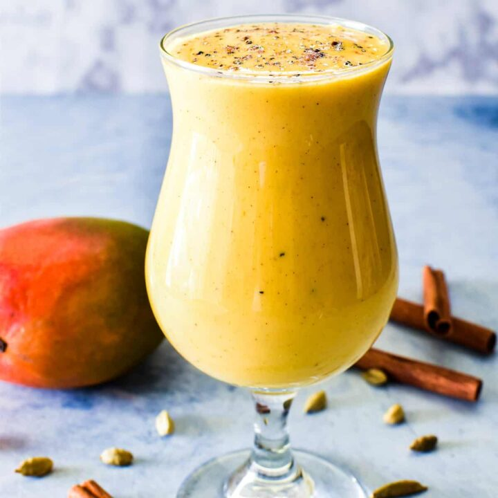
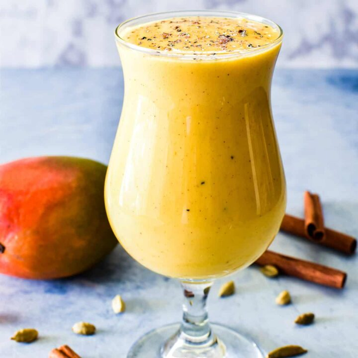

| Favorite Season | Spring |  |
|---|---|---|
| Favorite Drink | Mango Lassi |  |
| Favorite Animal | Dog's |  |
| Favorite Color | Pink |  |
This webpage is all about my mother, Nisha Nair. We will talk about her favorite things
My mother was born in Bangalore, India on December 4th, 1975. She went to school in Kerala and got a 4 year degree in Kerala . After college she got married to my dad, Sajeev Nair
After my mom married she had my older brother in Kerala, India. Two and a half years my mom had me in Hyderabad. In a year after having me we traveled across the globe to the United States of America. My mom did not work because she had a dependent VISA.

"They all die in the end"
| Favorite Season | Spring | |
|---|---|---|
| Favorite Drink | Mango Lassi |  |
| Favorite Animal | Dog's | |
| Favorite Color | Pink | |
Email: nisha_nair@gmail.com
Telephone Number: 980-387-3575